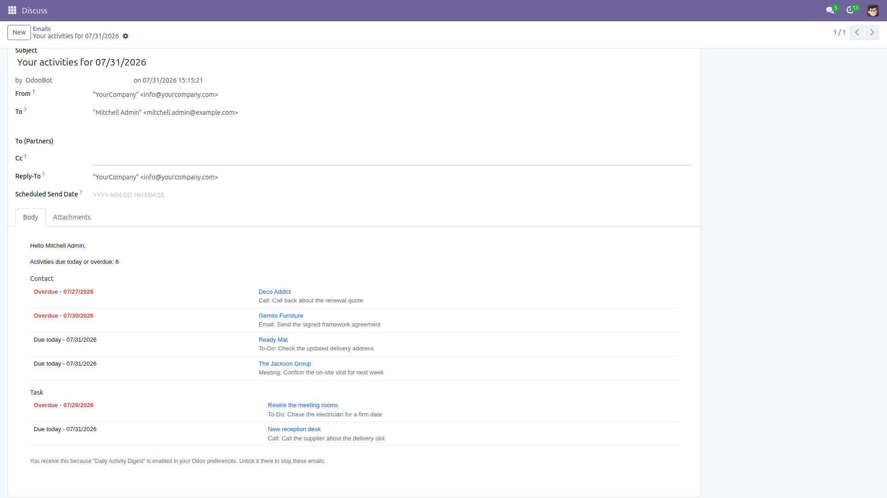
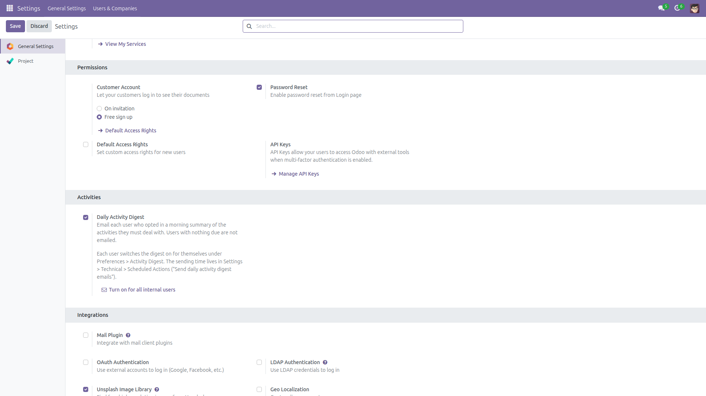
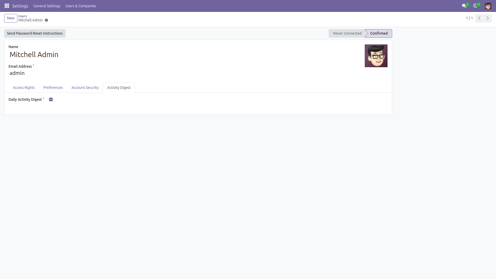
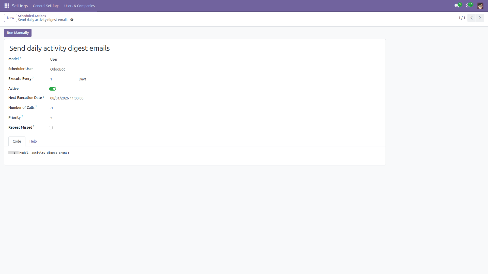

Daily Activity Digest Email
Every morning, the activities you must deal with today — in your inbox.
Odoo activities only nag you inside Odoo. Close the tab and the reminder is gone: calls, follow-ups and to-dos quietly slide past their due date because nothing reaches people where they actually look.
This module sends every user who opted in one email each morning listing the activities assigned to them that are due today or already overdue, grouped by document type, overdue lines in red, each line linking straight to the record in Odoo.
Users with nothing due are not emailed at all. Free and open source (LGPL-3), Odoo 14.0 through 19.0.
- Due today and overdue only — the digest answers "what must I not forget today", not "what is coming up". Activities with a future deadline are never listed.
- Grouped by document type — Contacts in one block, Tasks in another, using the model names of your own database.
- Overdue clearly marked — past-deadline lines are red and labelled Overdue, with the date they were due.
- One click to the record — every line is a link that opens the document in Odoo (the modern
/odoo/… URL on 18.0/19.0, the classic /web#… hash before that).
- No empty emails — a user with nothing due gets nothing. You will never receive a "you have 0 activities" message.
- Opt-in, per user — the checkbox lives in each user's own Preferences, so nobody needs an administrator to subscribe or unsubscribe. One admin button opts every internal user in at once.
- Right day, right language — "due today" is evaluated in the recipient's own timezone, and the whole email is built in the recipient's language with their date format.
- Respects access rights — activities are read as the recipient, so a document they may not read never reaches their inbox.
- Robust — an activity whose record was deleted in the meantime is skipped instead of breaking the digest, and one failing recipient never costs the others theirs.
- Global kill switch — one toggle in General Settings stops every digest, whatever each user asked for.
What this module never does. The digest is strictly read-only: it never creates, modifies, reschedules, completes or deletes an activity, and it never touches the documents behind them. It never subscribes anyone: the per-user checkbox starts at off, so installing the module sends nobody anything until someone opts in (or an administrator clicks Turn on for all internal users, which is behind a confirmation dialog and only touches active internal users). Portal and public users are never emailed, and neither are users without an email address.
Honest limitations.
It needs a working outgoing mail server. The digest is sent through Odoo's standard mail queue and is force-sent so it cannot sit in the queue all day — but if no outgoing mail server is configured, or SMTP refuses it, nothing arrives: the failure is written to the Odoo log and that day's digest is not retried later.
It covers Odoo activities (mail.activity) and nothing else — not calendar events as such, not project deadlines, not overdue invoices, not unread messages. Only activities whose assignee is the recipient are listed; activities you scheduled for somebody else appear in their digest, not yours.
One email per user per run, and the scheduled action runs once a day: a user who opts in at noon starts with the next morning's digest.
Volume is capped at the 100 oldest lines, taken from at most 500 activities; when that happens the email says so and points you back to Odoo — it will not mail somebody a thousand-line table.
The layout is fixed. The email body is generated in Python, not from a mail.template, so restyling it means overriding a method rather than editing a template in the UI. Sent digests are auto-deleted like other Odoo notification mails, so there is no permanent archive of them.
On Odoo 15.0 and 16.0 only, Odoo core hides an activity even from its own assignee when that user does not hold write access on the underlying document; such activities are invisible in Odoo's own activity views too, and they are therefore also absent from the digest. Odoo 14.0 and 17.0–19.0 do not have that restriction.
Finally, "due today" is computed from the recipient's Timezone in Preferences — a user who left it empty is treated as UTC.
Screenshots

The digest itself: the activities due today or overdue, grouped by document type, overdue lines in red, every line linking straight to its record.

The global switch in General Settings, with a one-click button to opt every internal user in.

Each user decides for themselves — the same checkbox is on their own Preferences screen, so no administrator is needed to opt in or out.

The scheduled action that sends the digests — move its next execution time to change the hour they go out.
Installation
- Copy the
activity_summary_digest folder into your addons path (or install it from the Apps store).
- Open Apps, click Update Apps List, search for Daily Activity Digest Email and click Install.
- No external Python library is needed. The module depends only on
mail and base_setup, which every Odoo database already has.
- Installing changes nothing on its own: the per-user preference starts switched off, so no email is sent until somebody opts in.
Configuration
- Make sure Odoo can send email: Settings → Technical → Outgoing Mail Servers. Without one, no digest can leave the system.
- Go to Settings → General Settings → Activities. Daily Activity Digest is the master switch and is on after installation; turning it off silences every digest at once.
- Opt users in. Either each user ticks Daily Activity Digest themselves in their Preferences (avatar menu → My Profile), or an administrator opens Settings → Users & Companies → Users → a user → Activity Digest, or clicks Turn on for all internal users under the settings switch to subscribe everybody in one go.
- Check each user's Timezone and Language in Preferences: they decide which calendar day counts as "today" and which language and date format the email uses.
- Choose the sending time. Enable developer mode, open Settings → Technical → Scheduled Actions → Send daily activity digest emails and set Next Execution Date to the moment of the first run — it repeats every 24 hours from there. The value is stored in UTC and displayed in your own timezone.
- Nothing else to configure: there is no template, no recipient list and no filter to maintain.
Usage
- Work normally: schedule activities on contacts, tasks, orders or any other document, as you already do.
- Once a day the scheduled action builds one email per opted-in user who has something due, and sends it. Users with nothing due are skipped entirely.
- Read the digest: a count at the top, then one block per document type. Red Overdue lines first inside each block, then the ones due today, each with its activity type, its summary and its due date.
- Click the record name on any line to open that document in Odoo and deal with the activity there.
- To test it without waiting for the morning, open the scheduled action and press Run Manually — every opted-in user with something due receives their digest immediately.
- To stop receiving it, untick Daily Activity Digest in your own Preferences. To stop it for everyone, turn the switch off in General Settings.
- If nobody receives anything, check in order: the global switch, the user's checkbox, whether the user actually has an activity due today or overdue, whether the user has an email address, and the Odoo log for outgoing-mail errors.
Version notes
Identical features on every supported series (14.0 – 19.0). Record links use the modern /odoo/<model>/<id> URL on 18.0 and 19.0 and the classic /web#id=… hash before that. On 15.0 and 16.0 Odoo core itself hides activities whose document the assignee cannot write, which narrows the digest on those two series only — see the limitations above.
License: LGPL-3 · Source on GitHub · Issues and contributions welcome.